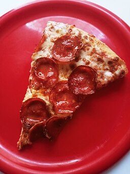

Pepperoni Pizza

MVS9966, CC BY 3.0, via Wikimedia Commons
Description
A classic and easy to follow pepperoni pizza recipe!
Ingredients
Pizza Sauce
- 1/2 cup of water
- 12 ounces of tomato paste
- 1 teaspoon of crushed dried oregano
- 1 teaspoon of crushed dried basil
- 1/2 teaspoon of garlic powder
- 1/2 teaspoon of onion powder
- 1/2 teaspoon of sugar
- 1/2 teaspoon of salt
- 1/4 teaspoon of black pepper
Pizza Crust
- 3 1/4 cups of all-purpose flower
- 1/4 ounce of yeast
- 1 tablespoon of sugar
- 1 1/2 teaspoons of salt
- 1 1/3 cups of hot water
- 1/3 cup of oil
Toppings
- 1 cup of shredded mozarella cheese
- 6 ounces of sliced pepperoni
Steps
- Preheat the oven to 425 degrees F and prepare two 12-inch pans.
- Make the sauce: Combine water, tomato paste, oregano, basil, garlic powder, onion powder, sugar, salt, and pepper.
- Make the crust: Combine 2 cups of flower, yeast, sugar, and salt. Mix with water and oil. Gradually add remaining flour until dough forms.
- Knead dough for around 4 minutes until it's smooth and elastic.
- Divide dough in half and place each piece on prepared pans.
- Top dough with sauce, cheese, and pepperoni.
- Bake for approximately 20 minutes or until ready.
Home
{kind=link}